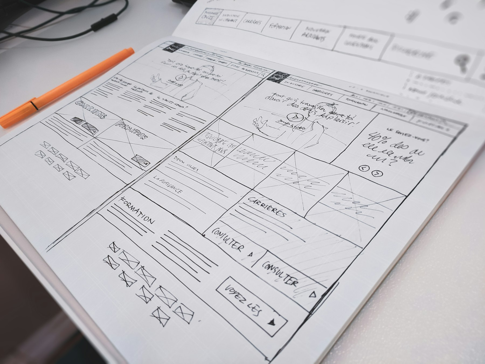

TL;DR
Small business owners can leverage various AI tools for automation, customer engagement, data analytics, social media management, and marketing optimization. These tools enhance efficiency and decision-making.
Automation Tools
Automation tools are essential for small business owners aiming to increase efficiency. These tools help in automating routine tasks and processes. Consider tools like Zapier or Integromat, which integrate various apps and transfer data between them automatically. By setting up triggers and actions, you can save hours each week. For example, automate leads coming from your website to a customer relationship management system. Another great option is Asana or Monday.com, which allow teams to manage tasks and projects seamlessly. Automating assignments and reminders can help keep your team on track.
Customer Engagement AI
Customer engagement is crucial for small businesses. AI tools like chatbots can help maintain constant communication with customers. Tools like Drift and Intercom allow businesses to set up chatbots that can answer frequently asked questions, schedule appointments, and even collect feedback. These bots work around the clock, ensuring your customers receive support even outside business hours. Incorporating these systems can increase customer satisfaction and lead to higher retention rates. Personalization tools can also help tailor marketing messages to customers, improving your outreach efforts significantly.
Data Analytics Platforms
Understanding your business's data can lead to better decision-making. Data analytics tools empower small business owners to gain insights from vast amounts of data. Google Analytics is an accessible tool that helps track website performance and user behavior. You can monitor traffic sources, conversion rates, and customer demographics, allowing for targeted marketing efforts. Additionally, tools like Tableau and Microsoft Power BI offer complex data visualizations that simplify data interpretation. Using these insights, you can adjust your strategies in marketing, sales, and customer service, leading to enhanced growth opportunities.
Social Media Management
Social media is vital for brand visibility, and AI tools can streamline content management. Tools like Buffer and Hootsuite allow you to schedule posts across multiple platforms simultaneously. These tools not only automate the posting process but also provide analytics on engagement and reach. By analyzing this data, small business owners can determine the best times to post and the types of content that resonate with their audience. You can also use AI-driven tools like Lately that help generate social media posts from your blogs or website content, maximizing your content's reach with minimal effort.

Marketing Optimization Tools
Marketing optimization is essential for reaching the right audience effectively. AI tools can help analyze and refine your marketing strategies. Platforms like HubSpot and Mailchimp use AI to personalize email campaigns. You can segment your audience based on behavior and engagement, ensuring that your messaging is on point. Furthermore, A/B testing features allow you to experiment with different subject lines and content layouts, optimizing for the highest open rates. Using such tools enables small business owners to maximize their marketing budget and improve return on investment significantly.
FAQ
What is the best AI tool for automation?
Zapier is highly popular for automating various tasks and linking different applications.
Can AI tools help with customer service?
Yes, chatbots like Drift and Intercom can improve customer service responses and engagement.
Do I need technical skills to use these AI tools?
Most AI tools are designed to be user-friendly, requiring minimal technical skills.
How can I measure the effectiveness of AI tools?
Using analytics provided by these tools is the best way to evaluate their impact on your business.
What is the cost of using AI tools?
Many AI tools have free versions, while paid subscriptions generally range from $10 to $300 per month depending on the features.
Photo credits
- Photo 1: Mohamed Nohassi on Unsplash (https://unsplash.com/@coopery) (https://unsplash.com/photos/a-white-robot-with-blue-eyes-and-a-laptop--0xMiYQmk8g)
- Photo 2: Fernando Hernandez on Unsplash (https://unsplash.com/@_ferh97) (https://unsplash.com/photos/a-computer-monitor-sitting-on-top-of-a-desk-pOmr_qQRgiU)
- Photo 3: Joshua Mayo on Unsplash (https://unsplash.com/@joshuamayoo) (https://unsplash.com/photos/macbook-pro-on-brown-wooden-table-HASoyURgPMY)
- Photo 4: Mariia Shalabaieva on Unsplash (https://unsplash.com/@maria_shalabaieva) (https://unsplash.com/photos/a-group-of-different-social-media-logos-HBkpnDVc_Ic)
- Photo 5: Compagnons on Unsplash (https://unsplash.com/@sigmund) (https://unsplash.com/photos/white-printer-paper-on-white-table-4UGmm3WRUoQ)